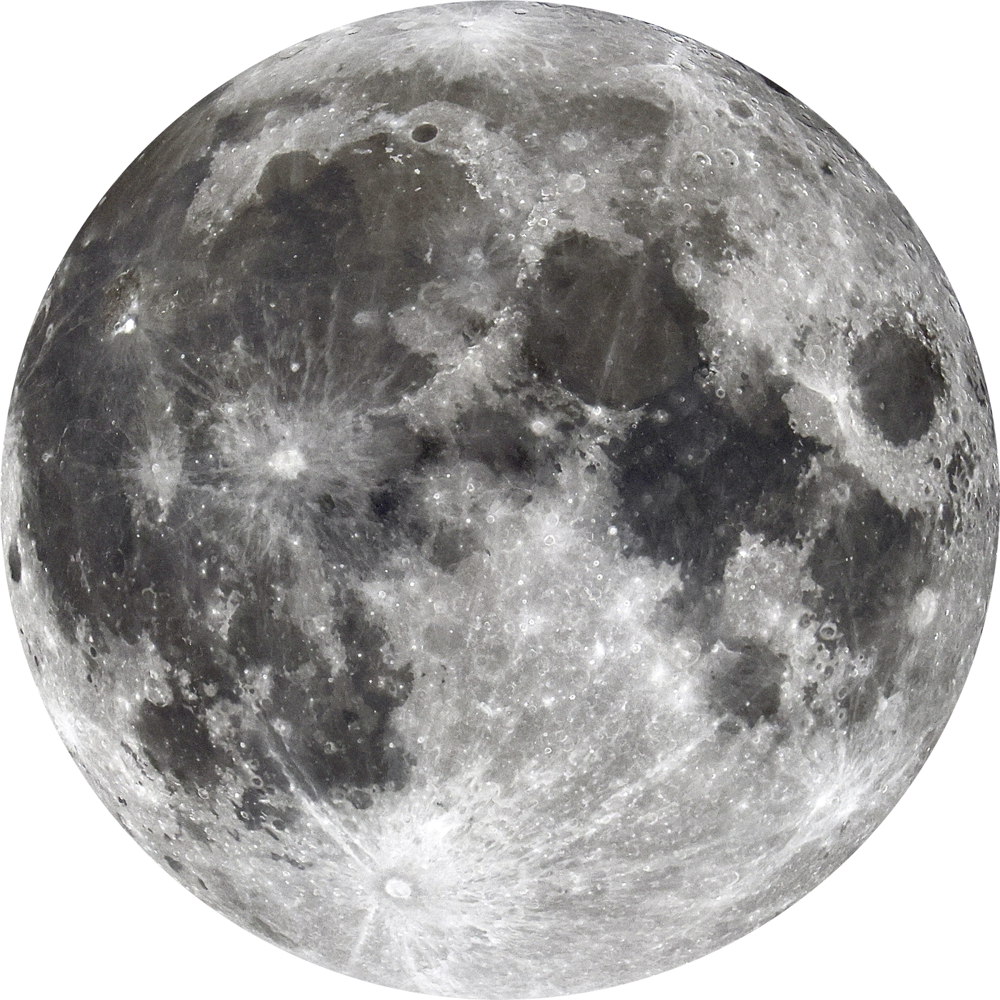
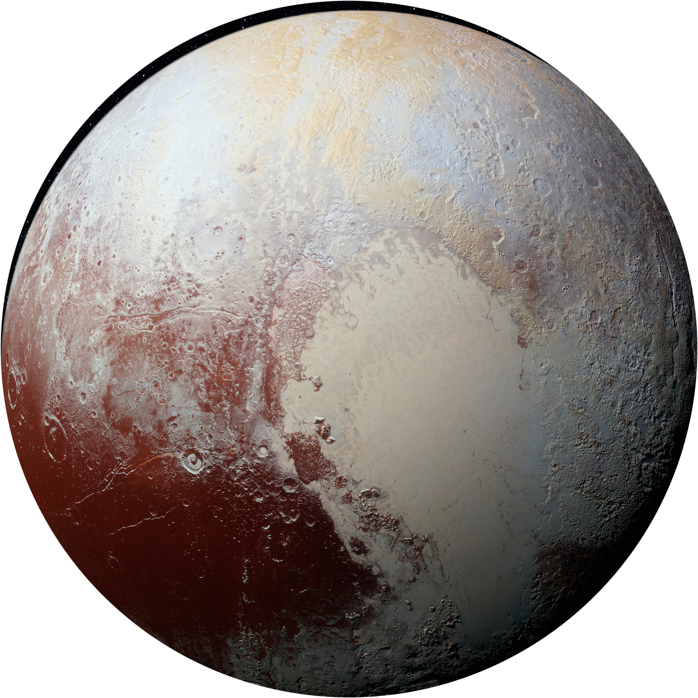
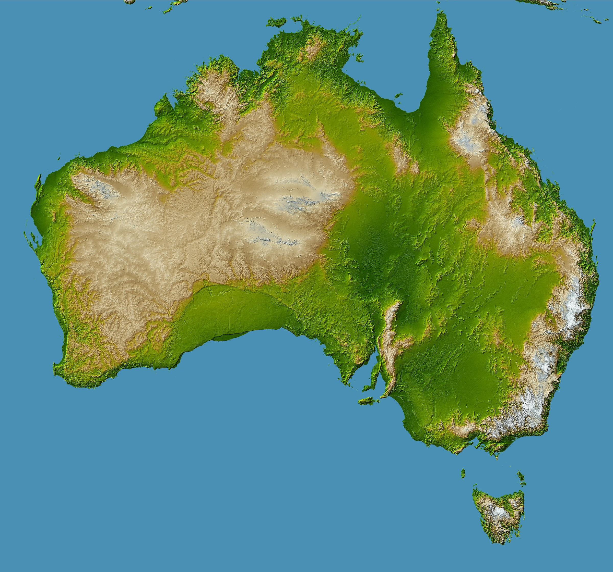
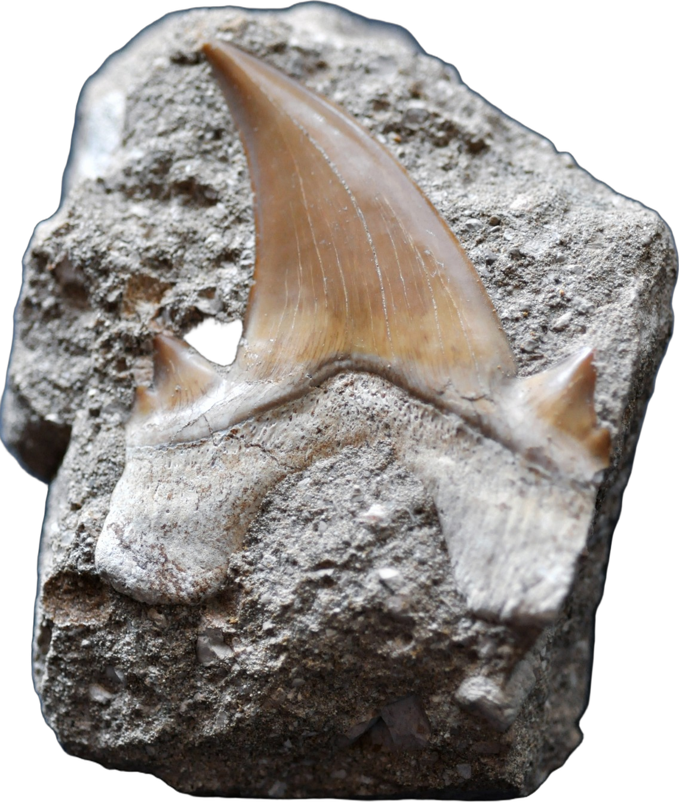
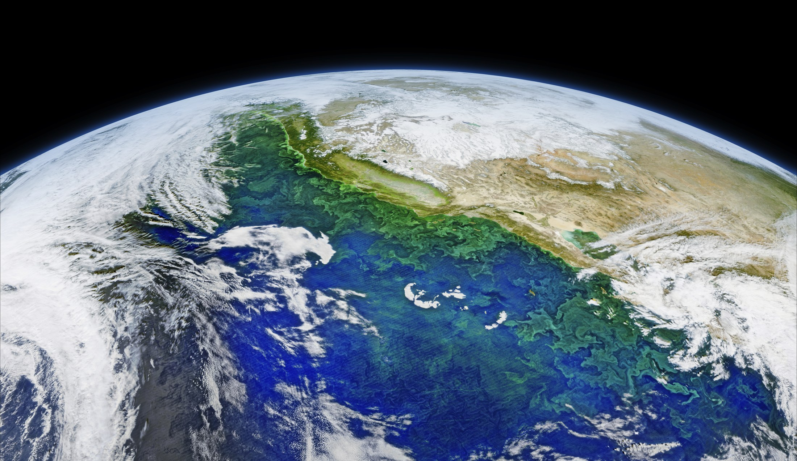

3 FAITS

N° 1

N° 2
?
N° 3
LE PLUS FOU
REC
00:00:00:00
SCIENCE · 3 FAITS
LUNE

AUSTRALIE · RELIEF NASA
≈
4 000
km
3 474
km
ÇA DÉPASSE !
PLUTON
PLUTON · NEW HORIZONS (NASA)
RUSSIE · MOSCOU
VS
MONTAGNES DE GLACE
CŒUR BLANC
PLUTON ·
17,7
millions de km²
RUSSIE ·
17,1
millions de km²
97 %
REQUIN
N° 3 · LE PLUS FOU
REQUINS
ARBRES
PLUS VIEUX !

DENT DE REQUIN FOSSILE
IL Y A
450
M
D'ANNÉES
PYEBWA
REQUINS
450 M
ARBRES
385 M
DINOSAURES
≈ 230 M
AUJOURD'HUI
65 M D'ANNÉES D'ÉCART
200 M D'ANNÉES APRÈS
LATÈ

LA TERRE · IMAGE NASA
PLUS VIEILLE
PLUS GRANDE
1
Australie > Lune
2
Russie ≈ Pluton
3
Requins > arbres
Mon fait encore plus fou :
Répondez ici
1
2
?
3 FAITS · LE 3
E
EST LE PLUS FOU